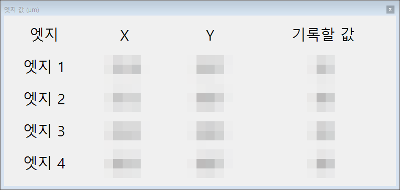
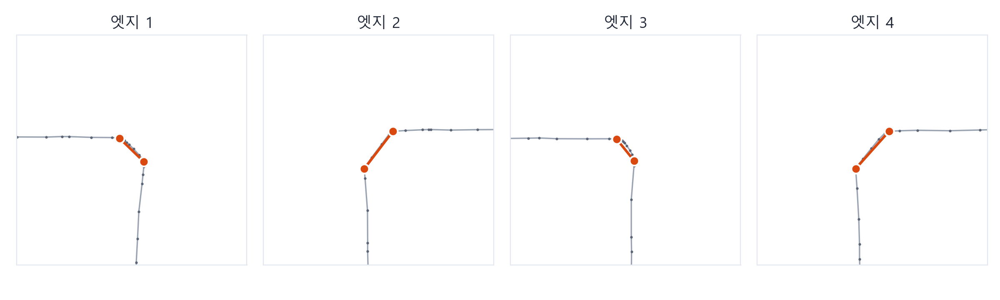
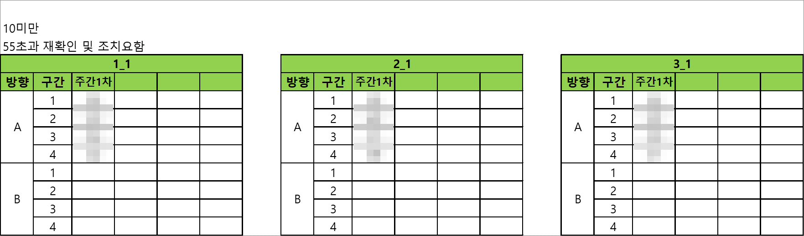
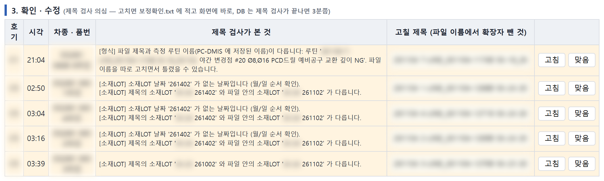
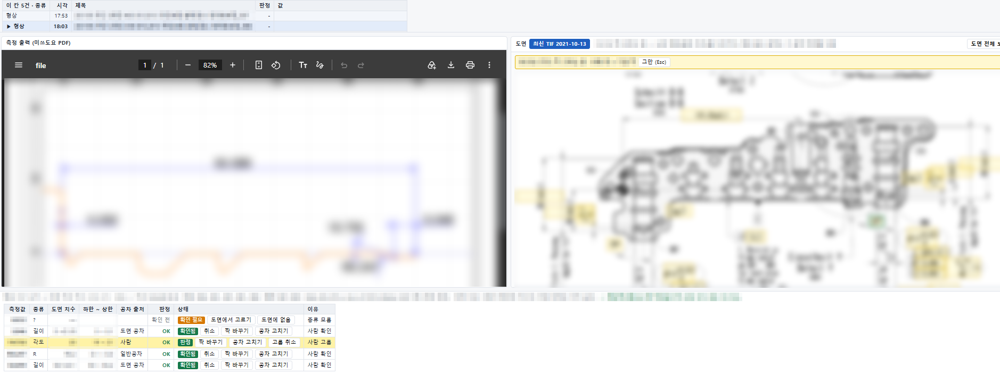
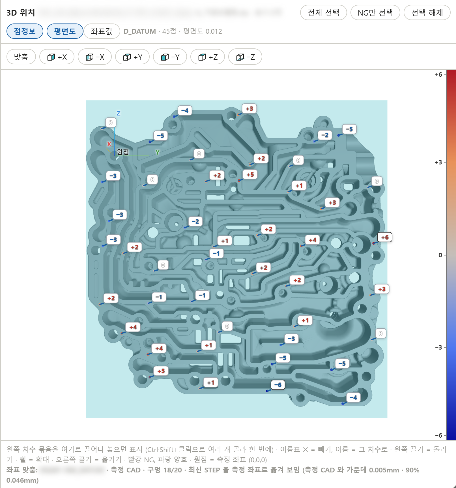
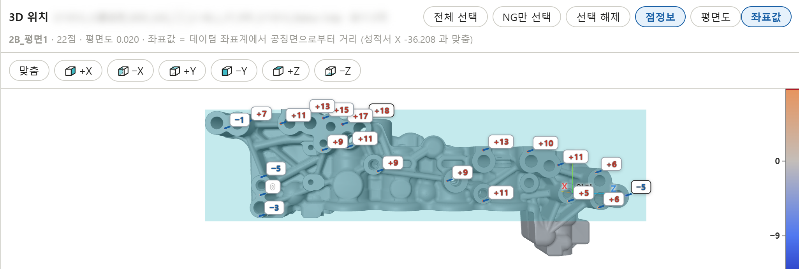

값 창은 작업을 막지 않습니다
오른쪽 아래에 떠서 포커스를 뺏지 않고, 10 미만 · 55 초과는 빨강으로 보입니다. 못 찍은 엣지는 '손으로 찍으세요'.

측정기 5대에서 '적용' 한 번에 검사 · 저장 · 커브 저장이 끝나고, 업무일지는 저절로 채워집니다.

측정 끝에 커브 분석 프로그램이 켜지면 숨긴 창에서 스캔 네 개를 받아, 면에서 10° 이상 꺾이는 구간의 양 끝 스캔 점을 고르고 엣지마다 X · Y 를 계산합니다. 작업자가 표제란 '적용'을 누르면 프로그램 · 엑셀 저장 뒤 같은 이름으로 커브를 저장하고 창을 닫습니다. 10~11월 커브 328개 가운데 327개가 손으로 찍은 값과 0.1 µm 안에서 같았습니다.

오른쪽 아래에 떠서 포커스를 뺏지 않고, 10 미만 · 55 초과는 빨강으로 보입니다. 못 찍은 엣지는 '손으로 찍으세요'.

날짜 시트 · 라인 블록 · 근무 열을 찾아 엣지 넷을 넣고, 이미 값이 있는 칸은 덮어쓰지 않고 알립니다.

제목 검사 → 측정 프로그램 저장 → 엑셀 성적서 저장(체크하면 PDF 도)이 차례로 돌고, 저장 중에는 입력을 잠가 결과를 초록 · 빨강 창으로 알립니다. 프로그램 원본에 실수로 저장하는 것과 손으로 따로 저장하는 것을 막고, 두 종류 측정 프로그램 모두 같은 방식입니다.


측정자는 '적용'만 누릅니다. 저장 위치 · 파일 이름 · 커브 · 기록 시트 · 업무일지는 도구가 맡습니다.
점검 기능 보기저장된 제목의 라인 · LOT · 날짜를 규칙과 지난 측정 통계로 검사해 틀린 곳을 업무일지 '확인 · 수정' 표에 올립니다. 사람이 '고침' 또는 '맞음'을 누르면 끝납니다.

형상 PDF 숫자를 읽어 도면 섹션 치수와 짝짓고 공차로 OK · NG 를 냅니다. 자동으로 못 정한 값은 '도면에서 고르기'로 도면 위 치수를 눌러 정하고, 고른 짝은 다음 측정부터 기억합니다.

측정값마다 짝지은 도면 치수와 공차가 어디서 왔는지, 도면에서 고른 섹션을 같이 띄웁니다.

제목의 공정 · 공구를 공정 공구표로 검사 번호로 바꿔 도면 단면 자리에 표시합니다.

성적서의 평면 항목을 고르면 측정점 위치를 3D 모델 위에 찍고, 맞춘 평면 편차(위)와 데이텀 좌표계 공칭면으로부터의 거리(아래)를 점마다 색으로 보입니다.


측정 프로그램 이벤트로 시작 · 끝을 바로 받아 주간 · 야간 업무일지를 채우고, 생산변경점 항목에서 그 변경점의 3차원 · 형상 · 조도 결과를 바로 엽니다.